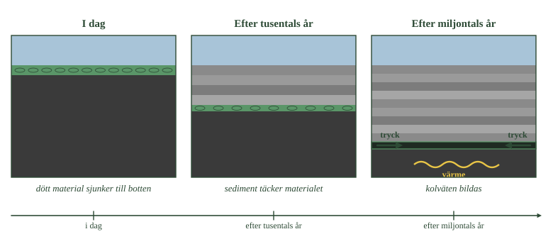
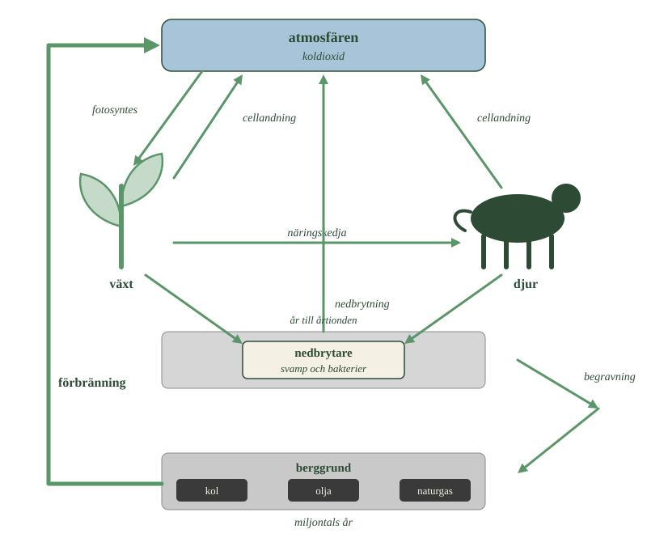
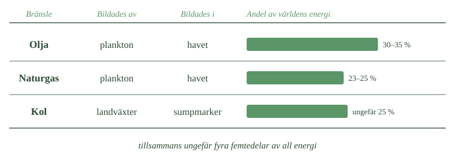

Vanligtvis försvinner allt
När en växt eller ett djur dör kommer nedbrytarna. Bakterier och svampar bryter ner materialet, och kolet i kroppen blir koldioxid som går tillbaka till luften.
Det är vad som händer med nästan allt levande. Kolet lånas och lämnas tillbaka.
Utan syre stannar nedbrytningen
Men nedbrytarna behöver syre för att arbeta.
På vissa ställen tar syret slut. I bottenslammet på en havsbotten, i ett kärr, i en sumpmark. Där finns så mycket dött material och så lite syre att nedbrytarna inte hinner med.
Då blir en del av materialet kvar. Det bryts inte ner, utan ligger på botten och begravs av lera och sand.
Det är samma sorts miljöer där metan bildas. Men här är det inte gasen som är intressant — det är det som blir liggande.
Tryck och värme under miljontals år
År efter år lägger sig nya lager av sediment ovanpå. Materialet hamnar allt djupare ner.
Djupt ner i berggrunden är trycket högt och temperaturen hög. Under miljontals år förändras det gamla organiska materialet långsamt.
Ur material från havet bildas olja och naturgas. Ur växter från sumpmarker bildas först torv och sedan kol.
- Följ det gröna lagret genom alla tre bilderna. Vad händer med det?
- Hur många sedimentlager finns i den första bilden jämfört med den sista?
- Varför blir det varmare ju djupare materialet hamnar?

Fossila bränslen bildades alltså inte snabbt. De tog längre tid att bli till än vad människan har funnits.
Kol, olja och naturgas kallas fossila bränslen. Ordet fossil kommer av latinets fossus, som betyder uppgrävd — och namnet passar, eftersom bränslena hämtas ur berggrunden.
Olja och naturgas består till stor del av kolväten, alltså samma sorts ämnen som förra delkapitlet handlade om. Kol är uppbyggt annorlunda och är ett mer komplicerat, mycket kolrikt material. Gemensamt för alla tre är att kolet en gång ingick i levande organismer.
Fossila bränslen står i dag för ungefär fyra femtedelar av världens energianvändning.
För att förstå hur de kunde bildas måste vi tillbaka till kolets kretslopp och ställa en fråga: vad händer om döda organismer inte bryts ner?
Normalt återförs kolet till kretsloppet
När växter och djur dör bryter nedbrytarna ner det organiska materialet. De har cellandning som alla andra organismer, och kolet återförs till atmosfären som koldioxid.
Det är det normala förloppet. Kol tas upp genom fotosyntesen, förs vidare genom näringskedjan och återvänder genom cellandning och nedbrytning. Samma kolatomer används om och om igen.
Men ibland bryts inte allt ner.
I syrefria miljöer stannar nedbrytningen upp
Nedbrytning kräver oftast syre. På vissa platser förbrukas syret snabbare än nytt hinner tillföras — i bottenslam på havs- och sjöbottnar, i kärr och i sumpmarker.
När syret tar slut går nedbrytningen mycket långsammare och blir ofullständig. Vissa mikroorganismer klarar sig utan syre, men en del av materialet blir kvar och begravs.
Vi har mött de här miljöerna förut. Det var där metan bildades och bubblade upp ur kärret. Nu är det en annan del av samma händelse som är viktig: allt kol försvinner inte som gas. En del blir kvar i sedimentet.
Tryck och värme gjorde resten under miljontals år
Materialet som blev kvar täcktes efter hand av nya lager av lera, sand och andra sediment. Lager efter lager samlades ovanpå.
Ju djupare det begravdes, desto högre blev trycket — och temperaturen steg med djupet. Under tiotals till hundratals miljoner år utsattes materialet för värme, tryck och kemiska förändringar.
Stora organiska molekyler omvandlades långsamt till kolväten, och därmed till olja och naturgas. Växtmaterial i sumpmarker blev först torv och sedan, under fortsatt tryck och värme, kol.
Fossila bränslen bildades alltså inte snabbt. De är resultatet av processer som pågått under miljontals år.
---
Nästan allt bröts ner ändå
Standardtexten beskriver hur organiskt material undgick nedbrytning och blev fossila bränslen. Det låter som en process som skedde regelbundet under miljontals år. Det gjorde den inte.
Det normala var alltid att materialet bröts ner. Uppskattningsvis mindre än en tiondels procent av allt organiskt material som någonsin bildats har undgått nedbrytning tillräckligt länge för att bli fossilt bränsle.
Fossila bränslen är alltså inte resultatet av en process som fungerade. De är resultatet av en läcka.
Det förklarar varför de är så ojämnt fördelade över jorden. Olja finns inte överallt, utan där mycket speciella villkor råkade uppfyllas samtidigt: hög produktion av plankton, syrefri botten, snabb begravning, rätt temperatur på rätt djup, och ett tätt berglager ovanför som höll kvar den. Fattas ett enda av villkoren blev det ingenting.
Mellansteget mellan organiskt material och olja har ett namn: kerogen. Det är ett segt, olösligt material som bildas när det begravda organiska materialet omvandlas under de första miljonerna åren. Först när kerogenet hettas upp tillräckligt börjar det avge kolväten.
Om modellen. Standardnivån beskriver hur fossila bränslen bildades. Det är korrekt, men det utelämnar hur osannolikt det var. Att bränslena är ändliga beror inte bara på att bildningen är långsam — utan på att den nästan aldrig lyckas.
Det snabba kretsloppet
I delkapitel 1 följde vi en kolatom runt ett kretslopp. Den togs upp av en växt, hamnade i ett blad, åts kanske av ett djur, och kom till slut tillbaka till luften.
Det kan gå fort. En kolatom i ett löv kan vara tillbaka i luften inom ett år. Sitter den i en trädstam kan det dröja hundra år.
Men det handlar om år och årtionden. Därför kallas det det snabba kretsloppet.
Det långa kretsloppet
Kolet som begravdes i sedimenten gjorde inte den resan.
Det slutade cirkulera. Det blev liggande, först i bottenslam och sedan djupt nere i berggrunden, och där stannade det i miljontals år.
Också det kolet rör sig, men oerhört långsamt. Berg vittrar, kontinenter rör sig, vulkaner får utbrott. Ett varv i det långa kretsloppet kan ta hundratusentals eller miljontals år.
Skillnaden mellan de två kretsloppen är alltså inte vägen. Det är tiden.
- Känner du igen den inre cirkeln från förra delkapitlet?
- Hur lång tid tar ett varv i den inre slingan jämfört med den yttre?
- Vilken pil är den enda som människan har skapat?

Förbränning flyttar kol mellan dem
Nu händer något som naturen inte gör.
Vi borrar, gräver och pumpar upp kolet som legat stilla i miljontals år. Sedan eldar vi det. Kolet reagerar med syre, blir koldioxid och hamnar i luften.
Det tar några ögonblick.
Här finns skillnaden mellan att elda ved och att elda olja. Ett träd tog upp sitt kol ur luften för några årtionden sedan. När veden brinner går kolet tillbaka dit det kom ifrån — det stannar i det snabba kretsloppet.
Fossila bränslen gör något annat. De tillför luften kol som varit borta i miljontals år.
Vad det betyder tittar vi på i avsnitt 5.
Det snabba kretsloppet går på år till årtionden
Det kretslopp vi såg i delkapitel 1 kan kallas det snabba kolkretsloppet.
En kolatom tas upp av en växt, byggs in i ett blad, äts av ett djur eller faller till marken, och återvänder till atmosfären genom cellandning eller nedbrytning.
Det kan gå fort. Kol som binds in under en växtsäsong kan vara tillbaka i luften samma år. Sitter det i en trädstam kan det dröja ett sekel. Men tidsskalan är år till årtionden.
Det långa kretsloppet går på miljontals år
Kolet som begravdes i sedimenten följde en annan väg. Det slutade cirkulera och blev liggande i marken och berggrunden.
Där kan det stanna i miljontals år.
Det betyder inte att kolet lämnat kretsloppet för alltid. Det finns ett långsamt kretslopp också, där kol lagras i bergarter, förs ner i jordskorpan och återförs genom vittring och vulkanisk aktivitet.
Skillnaden mellan de två kretsloppen är alltså inte vägen, utan tiden. Det snabba mäts i år, det långsamma i miljoner år.
Förbränning flyttar kol mellan kretsloppen
När vi bryter kol, pumpar upp olja eller utvinner naturgas händer något som naturen inte gör.
Vi tar fram kol som varit borta ur cirkulation i miljontals år, och förbränner det. Kolet reagerar med syre, bildar koldioxid och hamnar i atmosfären.
Det tar några ögonblick.
Här ligger skillnaden mellan fossilt kol och kol från ved. Ett träd som brinner avger kol som det själv tog upp ur luften för några årtionden sedan — kolet stannar i det snabba kretsloppet. Fossila bränslen tillför i stället kol som varit borta under geologisk tid.
Vad det gör med atmosfärens koldioxidhalt undersöker vi i avsnitt 4.
---
Det mesta kolet sitter i sten, inte i bränslen
Standardtexten ställer det snabba kretsloppet mot det långa och placerar fossila bränslen i det långa. Det stämmer. Men det ger intrycket att fossila bränslen är det stora kollagret under våra fötter, och det är de inte.
Det största kollagret på jorden är karbonatberg — kalksten och liknande bergarter, som till stor del byggts upp av skal och skelett från havslevande organismer.
Kalksten innehåller ungefär tusen gånger mer kol än alla fossila bränslen tillsammans.
Varför är det inte ett problem? Därför att kolet där sitter bundet till syre och kalcium, inte till väte. Kalksten brinner inte. Den kan avge koldioxid, men bara genom långsamma geologiska processer eller vid mycket hög temperatur — vilket är exakt vad som sker i en cementugn, och därför är cementtillverkning en av de stora koldioxidkällorna.
Det långa kretsloppet är alltså inte ett kretslopp utan flera, med mycket olika lager: kalksten i särklass störst, sedan spritt organiskt kol i skiffrar, och först därefter de koncentrerade fyndigheter vi kallar fossila bränslen.
Om modellen. Uppdelningen i två kretslopp fungerar för det avsnittet handlar om. Men "det långsamma kretsloppet" är ett samlingsnamn för processer som skiljer sig enormt i storlek och hastighet. Att fossila bränslen ligger där gör dem inte till lagrets huvuddel — bara till den del som råkar brinna.
De delar upp världens energi mellan sig
Olja, kol och naturgas står tillsammans för ungefär fyra femtedelar av all energi som används i världen.
Olja är störst med 30 till 35 procent. Kol ligger på ungefär 25 procent och naturgas på 23 till 25 procent.
Alla tre bildades av levande organismer, men inte av samma sorts organismer och inte på samma plats. Olja och naturgas kommer från havet. Kol kommer från växter på land.
- Vilka två bränslen har samma ursprung?
- Jämför staplarnas längd. Vilket bränsle är störst?
- Om staplarna läggs ihop, hur stor del av hela raden fylls då?

Alla tre är ändliga
Fossila bränslen bildas fortfarande. Problemet är hastigheten.
Det tog miljontals år att bilda den olja vi använder. Vi förbränner den på några årtionden. Nya fyndigheter hinner alltså inte bildas i närheten av samma takt som vi använder dem.
Därför kallas fossila bränslen ändliga eller icke förnybara.
Det går inte att säga exakt vilket år de tar slut. Hur mycket som räknas som möjligt att utvinna ändras hela tiden — nya fyndigheter hittas, och ny teknik gör det möjligt att komma åt sådant som förut var omöjligt.
För olja och naturgas brukar man tala om årtionden. Kolet räcker betydligt längre.
Ju mer kol, desto mer koldioxid
De tre bränslena är inte lika smutsiga.
Alla innehåller kol och väte, men i olika proportioner. När bränslet brinner blir kolatomerna koldioxid och väteatomerna vatten.
Ett bränsle med mycket väte och lite kol ger därför mindre koldioxid för varje enhet energi man får ut.
Naturgas har mest väte i förhållande till kol och ger minst koldioxid. Kol har nästan inget väte alls och ger mest. Olja hamnar mitt emellan.
Olja och naturgas kommer från hav och sjöar
Olja och naturgas har sitt ursprung i små organismer, framför allt plankton, som levde i gamla hav och sjöar.
När de dog sjönk de till botten. I syrefattig bottenmiljö undgick en del av materialet nedbrytning och begravdes under sediment. Med ökande djup steg temperaturen, och materialet omvandlades långsamt till olja och naturgas.
Ämnena kan sedan röra sig genom porer och sprickor i berggrunden tills de fastnar under ett tätt berglager. Där samlas de i en fyndighet. Eftersom naturgas är lättare än olja lägger sig gasen ovanpå.
Men det finns inga underjordiska sjöar av olja. Oljan sitter i små hålrum och sprickor i porösa bergarter, ungefär som vatten i en tvättsvamp.
Kol kommer från landväxter i sumpmarker
Stenkol har ett annat ursprung. Det bildades av landväxter i gamla sumpmarker.
Under vissa perioder i jordens historia fanns enorma sumpskogar med träd och stora ormbunksliknande växter. När de dog hamnade de i vattenmättad mark, där syrebristen hindrade nedbrytningen. Materialet samlades på hög och blev torv.
Begravdes torven under sediment pressades vatten och andra ämnen ut, och materialet blev allt rikare på kol. Ju längre omvandlingen gick, desto kolrikare blev det.
Det har en följd. Ju mer kol ett bränsle innehåller i förhållande till sitt väteinnehåll, desto mer koldioxid bildas per enhet energi. Kol ger därför mest koldioxid, naturgas minst, och olja hamnar mittemellan.
Alla tre är ändliga
Fossila bränslen nybildas fortfarande. Problemet är hastigheten.
Det tar miljontals år att bilda användbara mängder — och vi förbränner dem på timmar. Därför kallas de ändliga eller icke förnybara.
Det går inte att ange ett år då oljan tar slut. Hur mycket som räknas som utvinningsbart ändras när nya fyndigheter hittas och tekniken förbättras. Uppskattningarna är alltså ingen nedräkningsklocka.
Storleksordningen brukar anges i årtionden för olja och naturgas, och betydligt längre för kol.
Det viktiga är ändå inte antalet år, utan tidsskillnaden: fossila bränslen bildas på geologisk tid och förbrukas på mänsklig.
Reserver är en ekonomisk uppgift, inte en geologisk
Standardtexten säger att uppskattningar av hur länge bränslena räcker ändras när nya fyndigheter hittas och tekniken förbättras. Det stämmer, men det finns en viktigare orsak som texten inte nämner.
Inom oljeindustrin skiljer man på två begrepp.
Resurser är allt som finns i berggrunden, oavsett om det går att komma åt.
Reserver är den del som går att utvinna med dagens teknik och med vinst vid dagens pris.
Det är reserverna som rapporteras, och det är de siffrorna som används när någon räknar ut hur många år oljan räcker.
Det betyder att reservsiffran kan ändras utan att en enda liter olja tillkommit eller försvunnit. Stiger oljepriset blir svåråtkomliga fyndigheter lönsamma, och reserverna växer över en natt. Faller priset krymper de lika snabbt.
Under hela 1900-talet förutspåddes oljan ta slut inom ett par årtionden, och varje gång sköts tidpunkten fram. Inte för att geologerna räknade fel, utan för att de räknade på reserver — och reserver följer priset.
Om modellen. "Hur länge räcker oljan" låter som en geologisk fråga med ett bestämt svar. Den är i själva verket en ekonomisk fråga med ett rörligt svar. Det är också därför den frågan är mindre viktig än den som avsnitt 5 ställer: inte hur mycket som finns, utan hur mycket som kan brännas.
Laddar övningskort…
Laddar frågor ...